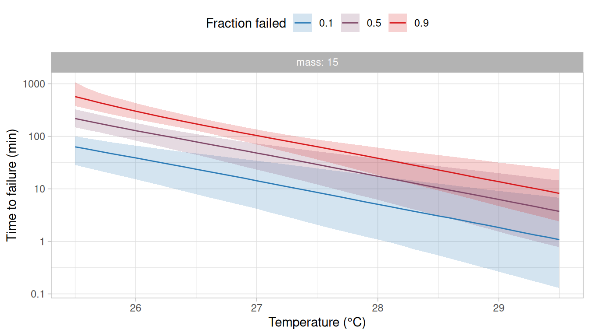
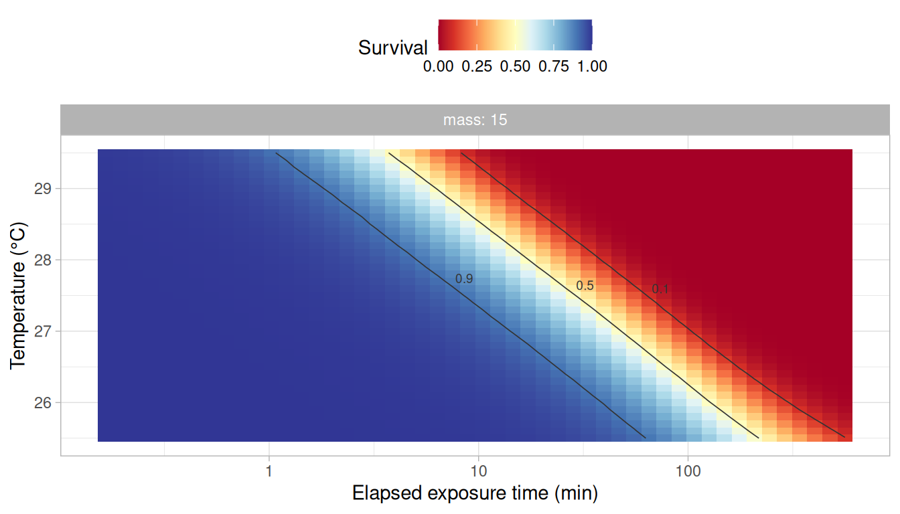
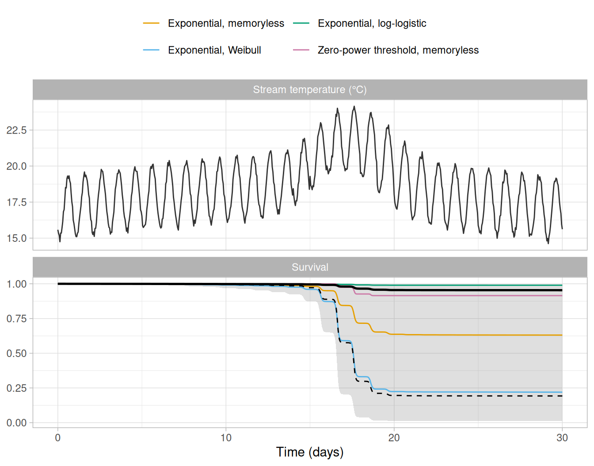

A model of thermal failure requires two choices: the function that describes how the failure rate changes with temperature and the baseline that describes how the hazard changes with the time under exposure. rTFT offers several functions for each (see ?M_catalogue and ?h0_catalogue), and the data of an assay often do not single one out. This would be of little consequence if the candidate models gave similar answers. However, models that describe the failures observed in an assay equally well may give very different predictions for conditions outside it, such as a record of stream temperature that lasts longer than the assay.
In this vignette, we fit four models that differ in their failure rate function or in their baseline to the ramping assay of the vignette Ramping assays. We then: (i) compare the models by cross-validation that leaves out whole trials, (ii) weight them by how well each predicts the trials it was not fitted to, and (iii) average what is derived from them (i.e., the static critical thermal maximum, the thermal death time curves, the thermal tolerance landscape and the survival predicted along a record of stream temperature).
The candidate models
We use the 120 fish of ramp_assay that were warmed from 14°C at 0.025, 0.1 or 0.3°C per min in normoxia, in four trials of 10 fish at each rate. These are the rates with the wider span in the vignette Ramping assays, where the table of intervals at risk is described.
Three of the four models share the exponential failure rate, , and differ in the baseline :
- the memoryless baseline (
"mem"), under which the hazard at a given temperature does not depend on the time under exposure. With the exponential failure rate, this is the exponential model of Kingsolver and Umbanhowar (2018). Under this model, the warmer the temperature at which individuals are held in a static trial, the sooner they fail, with the logarithm of the time to failure decreasing linearly with the temperature of the trial. This is the relationship of the thermal death time model, which is the model most often used in the literature (Rezende et al. 2014); - the Weibull baseline (
"weibull"), under which the hazard rises or falls throughout the exposure, as a power of the time under exposure; - the log-logistic baseline (
"llogis"), under which the hazard may rise at the start of the exposure and fall later.
The fourth model has a different failure rate function, the zero-power threshold of Kingsolver and Umbanhowar (2018) ("zeropower_threshold"), with the memoryless baseline. Under this function the failure rate is zero below a critical temperature , which is estimated, and increases above it as a power of the temperature in excess of , .
In each model, depends on body mass and varies among trials, as in the previous vignettes. The models are fitted in turn and kept in a named list, which the functions used below take as their input.
candidates <- list(
"Exponential, memoryless" = c("exp", "mem"),
"Exponential, Weibull" = c("exp", "weibull"),
"Exponential, log-logistic" = c("exp", "llogis"),
"Zero-power threshold, memoryless" = c("zeropower_threshold", "mem")
)
fits <- lapply(candidates, \(model) fit_hazard(
long,
m_form = model[1],
baseline = model[2],
dpar_formulas = list(loga = ~ 1 + I(mass - 15) + (1 | trial)),
chains = 4, iter = 2000, warmup = 1000, cores = 4, seed = 20261006,
control = list(adapt_delta = 0.95)
))Fitting and cross-validating the models takes about six hours, so the code of this vignette that uses the fitted models was run once and its results were saved with the package (see the note at the end of this vignette).
| Model | Largest R-hat | Smallest bulk ESS | Smallest tail ESS | Divergent transitions |
|---|---|---|---|---|
| Exponential, memoryless | 1.004 | 758 | 1254 | 1 |
| Exponential, Weibull | 1.002 | 926 | 1290 | 0 |
| Exponential, log-logistic | 1.005 | 863 | 1385 | 0 |
| Zero-power threshold, memoryless | 1.002 | 1814 | 1516 | 0 |
The four models converged (Table 1), with 1 divergent transition among the 4,000 draws of one of them. A few divergent transitions among thousands of draws are not a concern in themselves when and the effective sample sizes are satisfactory (see the vignette Getting started with rTFT). Each model was also checked against the data with check_survival() and hazard_residuals(), as described in the vignette Getting started with rTFT.
| Model | Times outside the band | P (residuals) |
|---|---|---|
| Exponential, memoryless | 0 of 458 | 0.63 |
| Exponential, Weibull | 0 of 458 | 0.79 |
| Exponential, log-logistic | 0 of 458 | 0.70 |
| Zero-power threshold, memoryless | 16 of 458 | 0.08 |
The three models with the exponential failure rate described the data well: the observed survival was within the simulated band at all times and the residuals did not depart from the uniform distribution (Table 2). Under the zero-power threshold model, the observed survival was outside the band at 16 of the 458 times (10 in the slowest ramp and 6 in the fastest), and the residuals followed the uniform distribution less closely. A model that describes the data poorly would normally be revised or set aside at this point. We keep it here to show how the cross-validation treats it.
The parameters of each model are obtained with derive_tdt_ttl(), as for a single model.
params <- lapply(fits, \(fit) {
derive_tdt_ttl(fit, newdata = data.frame(mass = 15), t_ref = 60)$params
})| Model | a | b | Shape (k) | Scale (min) | Tc (°C) |
|---|---|---|---|---|---|
| Exponential, memoryless | 0.0632 (0.0470–0.0840) | 1.44 (1.25–1.68) | |||
| Exponential, Weibull | 6.51 (4.46–9.23) | 1.54 (1.33–1.81) | 1.32 (1.02–1.64) | ||
| Exponential, log-logistic | 26.1 (10.8–68.9) | 1.53 (1.31–1.76) | 1.92 (1.41–2.81) | 257 (133–606) | |
| Zero-power threshold, memoryless | 3.75e-06 (4.19e-07–2.19e-05) | 5.86 (4.92–6.93) | 22.0 (21.4–22.4) |
Cross-validation that leaves out whole trials
The models are compared by how well each predicts data that it was not fitted to. What is left out in the cross-validation determines the question that it answers. The table of intervals at risk has one row for each fish and interval, so the usual leave-one-out cross-validation would leave out a single interval of a fish and predict it from the other intervals of the same fish, which is nearly always easy. Leaving out one fish at a time is still optimistic in these models, because the effect of its trial remains in the fit, estimated from the other fish of the trial. The function loo_hazard() therefore leaves out whole trials by default when the model has a trial effect, and so assesses how well the model predicts a new trial.
cv_psis <- lapply(fits, loo_hazard)loo_hazard() does not refit the model. It approximates the fit without each trial from the fit to all trials, using Pareto-smoothed importance sampling (Vehtari et al. 2017). The approximation is poor when leaving out a trial changes the posterior distribution markedly, and the function gives a warning when that is the case for any trial (i.e., when its Pareto diagnostic is above a threshold of about 0.7).
| Model | elpd | SE | Largest k | Trials with k > 0.7 |
|---|---|---|---|---|
| Exponential, memoryless | -905.4 | 20.8 | 0.89 | 4 |
| Exponential, Weibull | -903.5 | 21.7 | 0.74 | 2 |
| Exponential, log-logistic | -903.6 | 22.0 | 0.76 | 4 |
| Zero-power threshold, memoryless | -914.2 | 24.4 | 0.89 | 3 |
The approximation could not be trusted for 2–4 of the 12 trials in each model (Table 4), which is common when a whole trial is left out: a trial holds a twelfth of the fish and has its own effect in the model, so the fit changes when it is removed. In this case, the function kfold_hazard() gives the exact answer by refitting the model without each trial in turn and predicting the trial from the refit.
cv <- lapply(fits, kfold_hazard, cores = 4)Each model is refitted 12 times, once without each trial, which is what takes most of the time needed to run the code of this vignette. With many trials, the argument K of kfold_hazard() sets a smaller number of refits, each leaving out several trials (see ?kfold_hazard).
loo::loo_compare(cv)| Model | elpd | SE | Difference in elpd | SE of the difference |
|---|---|---|---|---|
| Exponential, log-logistic | -904.5 | 22.0 | 0.0 | 0.0 |
| Exponential, Weibull | -904.5 | 21.7 | 0.0 | 2.3 |
| Exponential, memoryless | -905.9 | 20.6 | -1.4 | 2.1 |
| Zero-power threshold, memoryless | -920.8 | 28.7 | -16.3 | 13.7 |
The three models with the exponential failure rate could not be told apart. Their elpd differed by at most 1.4, which is less than the standard errors of the differences (Table 5). The zero-power threshold model predicted the trials left out worse than the others (a difference of -16.3), although its difference from the best model was only 1.2 times its standard error. These standard errors are computed among 12 trials and are themselves uncertain, so differences of this size should not be read as evidence that one model is better than another.
For the three exponential models, the elpd obtained by refitting was within 1.0 of that obtained by importance sampling (Table 4). For the zero-power threshold model it was 7 lower (-920.8 against -914.2). The warning of loo_hazard() indicates only that the approximation cannot be relied on for the trials concerned, and not in which direction it errs. The comparison with the refits shows that, for this model, importance sampling gave an elpd that was too high.
Model weights
The function hazard_weights() turns the results of the cross-validation into weights for averaging the models. By default it uses stacking (Yao et al. 2018), which finds the combination of models that best predicts the trials left out. Pseudo-BMA weights, which follow the elpd of each model with its uncertainty among the trials, are the alternative. Their uncertainty is assessed by the Bayesian bootstrap, which draws random numbers, so we set a seed before computing them.
w <- hazard_weights(cv)
set.seed(20261006)
w_pseudobma <- hazard_weights(cv, method = "pseudobma")| Model | Stacking | Pseudo-BMA |
|---|---|---|
| Exponential, log-logistic | 0.50 | 0.41 |
| Exponential, Weibull | 0.50 | 0.44 |
| Zero-power threshold, memoryless | 0.00 | 0.01 |
| Exponential, memoryless | 0.00 | 0.14 |
Stacking gave nearly all of the weight to two models, the exponential failure rate with the log-logistic baseline (0.50) and with the Weibull baseline (0.50) (Table 6). The memoryless model received a weight of 0.00 although its elpd was within 1.4 of the best. This is how stacking treats a model whose predictions for the trials left out are close to those of models already in the combination: it adds nothing to the combination and receives no weight, even though it would predict almost as well on its own. Which of several similar models receives the weight depends on small differences in how each of them combines with the others to predict the trials left out, so a weight of zero should not be read as evidence against a model. The pseudo-BMA weights follow the elpd of each model instead, and gave the memoryless model a weight of 0.14. Under both methods the zero-power threshold model received almost no weight.
We use the stacking weights below, and the pseudo-BMA weights where the two are compared. With the argument min_weight, hazard_weights() keeps only the models with the highest weights, as many as needed for their weights to reach the given total (e.g., min_weight = 0.95), and computes the weights again among them.
Thermal tolerance averaged over the models
The function average_tdt_ttl() derives the static critical thermal maximum (sCTmax), the thermal death time curves and the thermal tolerance landscape from the models and averages them, and average_dctmax() does the same for the dynamic critical thermal maximum (dCTmax). For each quantity, the posterior draws of the models are pooled in proportion to their weights and the pool is summarised, so the credible interval reflects both the uncertainty within each model and the uncertainty about which model predicts best. The parameters are not averaged, because the parameters of models with different functions are different quantities under the same names (e.g., with the exponential failure rate, is the failure rate per minute at the reference temperature under the memoryless baseline, and the cumulative hazard reached over the reference time at that temperature under the Weibull baseline; see ?M_catalogue).
avg <- average_tdt_ttl(fits, w, newdata = data.frame(mass = 15), t_ref = 60,
Ta = seq(25.5, 29.5, by = 0.1))
avg_dct <- average_dctmax(fits, w, rate = c(0.01, 0.3, 1), T_start = 14,
newdata = data.frame(mass = 15))The argument Ta restricts the thermal death time curves to the temperatures at which most fish failed in the ramps (see the vignette Ramping assays). At lower temperatures the data do not constrain the form of the models, and the times to failure derived from the four models differ by many orders of magnitude. The average can be computed for those temperatures, but it is very uncertain there, and its credible interval should be read in preference to its median.
| Model | sCTmax, 60 min | dCTmax, 0.01°C per min | dCTmax, 0.3°C per min | dCTmax, 1°C per min |
|---|---|---|---|---|
| Exponential, memoryless | 26.2 (26.0–26.5) | 26.1 (25.8–26.5) | 28.5 (28.3–28.7) | 29.3 (29.1–29.6) |
| Exponential, Weibull | 26.7 (26.2–27.1) | 25.8 (25.4–26.3) | 28.7 (28.4–28.9) | 29.7 (29.3–30.1) |
| Exponential, log-logistic | 26.9 (26.4–27.3) | 26.6 (26.1–27.0) | 28.8 (28.5–29.1) | 30.2 (29.7–31.0) |
| Zero-power threshold, memoryless | 25.9 (25.7–26.1) | 26.0 (25.7–26.2) | 28.5 (28.3–28.8) | 29.8 (29.5–30.2) |
| Average | 26.8 (26.3–27.3) | 26.2 (25.5–26.9) | 28.7 (28.5–29.0) | 29.9 (29.4–30.8) |
The models agreed closely on the quantity that the assay measured directly. The dCTmax at 0.3°C per min, one of the rates of the assay, was 28.5–28.8°C among the four models (Table 7). They agreed less on quantities further from the conditions of the assay: the dCTmax was 25.8–26.6°C at 0.01°C per min and 29.3–30.2°C at 1°C per min, and the sCTmax for 60 min was 25.9–26.9°C. Averaged over the models, the sCTmax was 26.8°C (95% credible interval: 26.3–27.3°C), an interval wider than that of any of the models because it also includes the uncertainty among models. The average changed little with the weights used: with the pseudo-BMA weights the sCTmax was 26.7°C (26.1–27.2°C).
The thermal death time curves and the thermal tolerance landscape averaged over the models are drawn with plot_tdt() and plot_ttl(), as for a single model (Figure 1; Figure 2).
plot_tdt(avg, time_unit = "min")
plot_ttl(avg, time_unit = "min")
Survival along a record of stream temperature
The function average_survival() does the same for the survival predicted along a record of temperature. We use the 30 days of stream_record, as in the previous vignettes, and also predict from each model on its own to see what the average is made of.
fish <- data.frame(mass = 15)
each <- lapply(fits, predict_survival, record = stream_record, newdata = fish)
averaged <- average_survival(fits, w, stream_record, newdata = fish)
# the same with the pseudo-BMA weights
averaged_pseudobma <- average_survival(fits, w_pseudobma, stream_record, newdata = fish)
panels <- c("Stream temperature (°C)", "Survival")
temperature <- data.frame(panel = panels[1], time = stream_record$time,
temp = stream_record$temp)
by_model <- do.call(rbind, lapply(names(each), \(m) {
data.frame(panel = panels[2], model = m, each[[m]]$survival)
}))
pooled <- data.frame(panel = panels[2], averaged$survival)
# simulated_survival holds the survival under the model used to simulate the data,
# computed as in the vignette Ramping assays
# The panels and the models share one order in the four tables.
temperature$panel <- factor(temperature$panel, levels = panels)
by_model$panel <- factor(by_model$panel, levels = panels)
pooled$panel <- factor(pooled$panel, levels = panels)
simulated_survival$panel <- factor(simulated_survival$panel, levels = panels)
by_model$model <- factor(by_model$model, levels = names(each))
ggplot(mapping = aes(x = time / 1440)) +
geom_line(data = temperature, aes(y = temp), colour = "grey20") +
geom_ribbon(data = pooled, aes(ymin = lower, ymax = upper), fill = "grey50", alpha = 0.25) +
geom_line(data = by_model, aes(y = median, colour = model)) +
geom_line(data = pooled, aes(y = median), colour = "black", linewidth = 0.9) +
geom_line(data = simulated_survival, aes(y = survival), colour = "black",
linetype = "dashed") +
scale_colour_manual(values = c("#E69F00", "#56B4E9", "#009E73", "#CC79A7"), name = NULL) +
facet_wrap(vars(panel), ncol = 1, scales = "free_y") +
labs(x = "Time (days)", y = NULL) +
theme_light() +
theme(legend.position = "top") +
guides(colour = guide_legend(nrow = 2))
| Model | Stacking weight | Pseudo-BMA weight | Mean | Median | 95% CrI |
|---|---|---|---|---|---|
| Exponential, memoryless | 0.00 | 0.14 | 38 | 37 | 14–66 |
| Exponential, Weibull | 0.50 | 0.44 | 74 | 78 | 31–100 |
| Exponential, log-logistic | 0.50 | 0.41 | 1 | 1 | 0–3 |
| Zero-power threshold, memoryless | 0.00 | 0.01 | 10 | 9 | 3–22 |
| Average, stacking weights | 37 | 5 | 0–99 | ||
| Average, pseudo-BMA weights | 38 | 32 | 0–99 |
The four models gave very different predictions for the same record (Figure 3; Table 8). The probability of failing by the end of the 30 days was 1% (0–3%) under the log-logistic baseline, 9% (3–22%) under the zero-power threshold model, 37% (14–66%) under the exponential model with the memoryless baseline and 78% (31–100%) under the Weibull baseline. The two models that cross-validation weighted the most, and could not tell apart, gave the two most distant predictions.
The models differ because the record lasts much longer than the assay. The longest exposure in the assay was 9.4 h, and 100% of the risk predicted along the record was accrued after that time, as the message of predict_survival() and its table coverage report (see the vignette Ramping assays). Over the exposures of the assay the three baselines describe the failures equally well. Beyond them they diverge. Under the Weibull baseline, the hazard at a given temperature keeps rising with the time under exposure. Under the memoryless baseline, it stays the same. Under the log-logistic baseline, it falls after an initial rise, and it is under this baseline alone that the heat wave carries almost no risk, because it comes after two weeks of exposure. The zero-power threshold model predicts few failures for another reason, which is that its failure rate is zero below the critical temperature , estimated at 22.0°C (95% credible interval: 21.4–22.4°C; Table 3), and the stream exceeded that temperature only during the afternoons of the heat wave.
The average reflects this disagreement. With the stacking weights, its 95% credible interval was 0–99%, which includes nearly every possible outcome, and its median was 5%.
The median is not a value between the predictions of the two models with the highest weights, as might be expected of an average. A model average is a mixture of the posterior distributions of the models, in which each model contributes posterior draws in proportion to its weight, and what is reported is the median and the interval of that mixture. Here, about half of the draws came from the log-logistic model (501 of 1000), all of which predict a mortality of a few percent, and about half from the Weibull model (499), nearly all of which predict a mortality above 30%, with almost no draws in between. The median of a mixture with two separate groups of values lies at the edge of whichever group holds slightly more than half of the draws, and a small change in the weights moves it from one group to the other. With the pseudo-BMA weights, the interval was nearly the same (0–99%) but the median was 32%.
This is a consequence of the disagreement among the models, and not of model averaging. Where the models agree, as for the sCTmax above, the average is nearly the same under either set of weights and its median summarises it well. Where they disagree as much as they do for this record, no single value summarises the average, and the interval and the predictions of each model should be reported with whichever value is given.
predict_survival() and average_survival() report the mean of the posterior draws beside their median (Table 8), and the two mean different things. For a probability such as mortality, the mean is the probability that a fish fails once the uncertainty in the parameters, and in the model as far as the weights measure it, is taken into account. It is therefore the fraction of fish expected to fail. The median is the value below which half of the posterior lies, and it describes the posterior well when its values form a single group. The credible interval belongs to the posterior distribution and not to either of its summaries, so it is the same whichever of the two is reported. For each model on its own, the two differed by at most 4 percentage points.
For the average they differed greatly. The mean was 37% with the stacking weights and 38% with the pseudo-BMA weights, against medians of 5% and 32%, so the mean changed little with the weights. Relying on the mean amounts to treating the weights as the degree to which each model should be believed for this record. The weights measure how well each model predicts within the conditions of the assay, which is not the same, and the mean of 37% is a value that neither of the two models with the highest weights predicts: it is what is expected on average when the mortality is either about 1% or about 78%. Relying on the median amounts to reporting the centre of a posterior that has no centre here. Where the models agree, the choice is of no consequence: for the warmest day of the record (see below), the mean and the median of the average were 14% and 13%.
The weights indicate how well each model predicts failures under the conditions of the assay. They do not indicate which model extrapolates better beyond those conditions, which the data of the assay cannot show.
All of these predictions also assume that there is no recovery: the hazard accrued during a warm afternoon is carried through the following night, although the stream cooled to 18–20°C every night of the heat wave. The model used to simulate the data makes the same assumption, so the agreement of a prediction with the simulated value says nothing about whether the assumption holds. In a real stream, fish are expected to recover at least in part during the cooler hours (Ørsted et al. 2022), in which case every model would overestimate the mortality over a sequence of warm days, by an amount that an assay such as this one, with a single ramp for each fish, was not designed to estimate (see the vignette Getting started with rTFT).
Comparison with the model used to simulate the data
The data were simulated from an exponential failure rate with a Weibull baseline (see ?ramp_assay), so one of the four candidates has the form of the model that generated them. The model used to simulate the data gives an sCTmax for 60 min of 27.0°C and a mortality of 81% along the stream record, which are close to the estimates of the candidate fitted with the Weibull baseline (26.7°C and 78%).
Cross-validation did not identify that candidate. The Weibull and the log-logistic baselines predicted the trials left out equally well, and stacking gave them weights of 0.50 and 0.50. An assay with exposures of at most 9.4 h does not contain the information needed to choose between two baselines that differ in what they imply for exposures of weeks.
This does not mean that a ramping assay cannot support predictions for the field. Predictions are more often needed for a warm period (e.g., a heat wave) than for a whole record that includes weeks at temperatures that cause no failures, and the disagreement among the models depends on how much longer the period is than the exposures of the assay, as predictions for shorter parts of the same record show.
# the warmest day of the record, with its exposure counted from the start of the day
warmest_day <- subset(stream_record, day == 18)
warmest_day$time <- warmest_day$time - warmest_day$time[1]
lapply(fits, \(fit) predict_survival(fit, warmest_day, newdata = fish)$mortality)
average_survival(fits, w, warmest_day, newdata = fish)$mortality| Model | 30 days | Heat wave, 5 days | Warmest day, 24 h |
|---|---|---|---|
| Exponential, memoryless | 37 (14–66) [38] | 35 (14–63) [36] | 15 (6–30) [16] |
| Exponential, Weibull | 78 (31–100) [74] | 53 (24–86) [54] | 18 (8–34) [19] |
| Exponential, log-logistic | 1 (0–3) [1] | 8 (3–19) [9] | 9 (4–19) [10] |
| Zero-power threshold, memoryless | 9 (3–22) [10] | 9 (3–22) [10] | 5 (2–12) [6] |
| Average | 5 (0–99) [37] | 21 (3–83) [31] | 13 (4–30) [14] |
| Model used to simulate the data | 81 | 45 | 12 |
For the warmest day alone, the four models predicted a mortality of 5–18%, and their average was 13% (95% credible interval: 4–30%), against 12% under the model used to simulate the data (Table 9). For the five days of the heat wave they predicted 8–53% (45% under the model used to simulate the data), and for the 30 days 1–78% (81%). A ramping assay therefore supports best the predictions for events that last about as long as its trials (e.g., a hot afternoon or a hot day), for which the choice of baseline matters little. These predictions count the exposure from the start of the event, and so assume that the days before it left no effect on the fish. As above, they also assume no recovery during the event, which matters more the more nights it includes.
For longer periods, the predictions of the models with the highest weights can be reported together as the range of outcomes that the assay cannot distinguish. Where predictions over long periods are the aim, the assay should also include the longest trials that are practical (e.g., static trials of several days, as in the vignette Getting started with rTFT), which narrow that range although they do not remove it.
Reporting
When several candidate models are fitted, we recommend reporting: (i) the comparison of the models and their weights, with the unit that was left out and the number of units (here, 12 trials); (ii) for the quantities that refer to the conditions of the assay (e.g., the dCTmax at the rates that were run), the estimates of the models with the highest weights or their average, which differ little; and (iii) for predictions outside the conditions of the assay, the prediction of each model alongside the average, with the interval of the average, its mean and its median where they differ, and the coverage reported by predict_survival().
Precomputed results
The models in this vignette were fitted and cross-validated with
rTFT0.0.0.9000 on 2026-10-08 by the scriptvignettes/_precompute.Rin the package’s repository. The vignette displays the saved summaries, and all other code runs when the vignette is built.
References
Kingsolver, J. G. and Umbanhowar, J. (2018). The analysis and interpretation of critical temperatures. Journal of Experimental Biology 221, jeb167858. https://doi.org/10.1242/jeb.167858
Ørsted, M., Jørgensen, L. B. and Overgaard, J. (2022). Finding the right thermal limit: a framework to reconcile ecological, physiological and methodological aspects of CTmax in ectotherms. Journal of Experimental Biology 225, jeb244514. https://doi.org/10.1242/jeb.244514
Rezende, E. L., Castañeda, L. E. and Santos, M. (2014). Tolerance landscapes in thermal ecology. Functional Ecology 28, 799–809. https://doi.org/10.1111/1365-2435.12268
Vehtari, A., Gelman, A. and Gabry, J. (2017). Practical Bayesian model evaluation using leave-one-out cross-validation and WAIC. Statistics and Computing 27, 1413–1432. https://doi.org/10.1007/s11222-016-9696-4
Yao, Y., Vehtari, A., Simpson, D. and Gelman, A. (2018). Using stacking to average Bayesian predictive distributions. Bayesian Analysis 13, 917–1007. https://doi.org/10.1214/17-BA1091